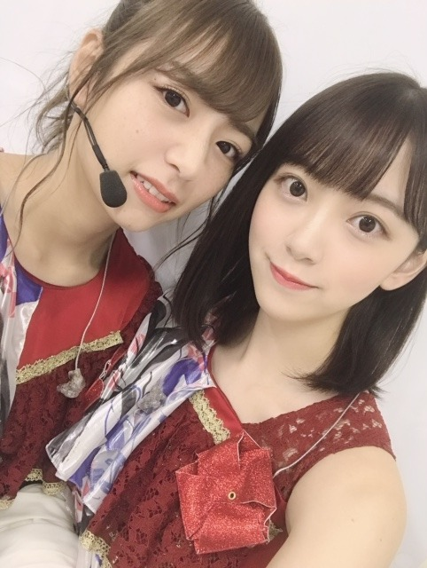
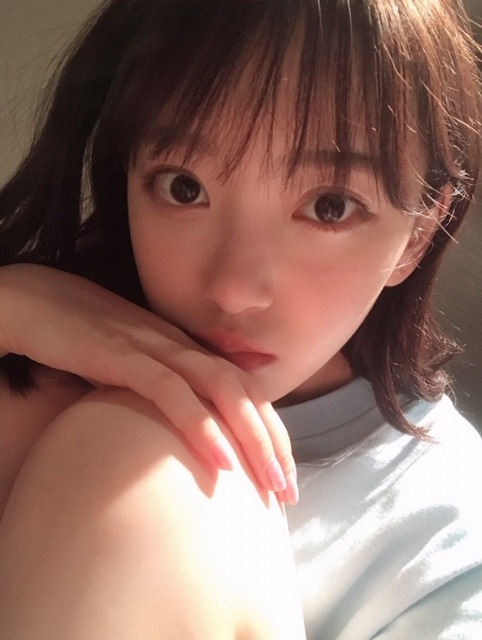

2019/0722Monいつから虫が怖くなったんだろう


カメラ向けるといつも犬みたいな顔してくる日奈子。
福岡ライブ無事、終わりました！
楽しかったなぁ☺︎
きてくださった皆さんの笑顔にたくさん元気をもらいました。ありがとうございます。
名古屋も終わり、残すところは大阪と神宮だー！

髪型珍しくストレートにしたの！
ストレート好きー？
絢音が楽屋の席となりだったんだけど、髪型見るなり
イイねってグッドポーズをくれました♡
いつも基本肯定してくれるし、髪型今日いいね！ってさらっと言ってくれたりするし人を傷つけない優しいところも大好きだし絢音みたいな人と付き合いたいなー！
よろしくねー！！
たのしもうねー！！
しおりと絢音と福岡ライブの楽屋でホットギミック について語り合えた。笑
真剣に観てくれてすきな作品って言ってくれて本当に嬉しいし挑戦して良かったって心から思えます
ありがとう☺︎
れなも、聖来も観てくれたみたい。
みんなありがとうー！！！
まだ上映中ですので是非✨

寝るのって大事。
笑うのって大事。
今日はたくさん友達と笑ったから
早く寝ます！昨日悪夢みたから今日はいい夢みれますように
みんなもね(^-^)
おやすみー
2019/07/22 21:06


コメント(434)
また大阪楽しみにしてます
ラーメンとかご当地のおいしいもの食べれましたか？？
ストレート、涼しげな感じでとても似合っていますよ。メンバー同士のいいところを見つけあって、いろんな事を語り合って、今年の夏の全国ツアーを通してもメンバー間の絆が強まりそうな気がして嬉しいです
笑顔と睡眠どっちも大切ですね。
笑顔という言葉で、大塚愛さんのSMILYという曲の歌詞を思い出しました。
♪泣きたいところはー、１人でも見つけられる
笑って笑って君の笑顔が見たい
この歌詞を思い出すと、笑顔を大切にしなくては、と思わされます。
今日はいい夢が見れるといいですね。
それではまた
おやすみなさい。
みおなのストレートめっちゃ好き！！！
ストレートもすごく似合ってます✨
どん髪でも絵になるってすごい……
人は知識と経験、想像力により恐怖を覚えるのではないかと思ったりε( ˇωˇ )э
大人になるにつれて怖いものが増えてる気がするけど、勇気を持ってぶつかるようにしたいな。未央奈さんからいつも勇気を貰ってます✨ありがとうございます✨
おやすみなさいー
ストレートの髪めちゃくちゃ似合ってました！
大阪も楽しみにしてます！！
福岡ライブお疲れ様です！
ストレートの未央ちゃんも大人っぽくて好きです！
やっぱ寝ないとやっていけないですよね！
いっぱい寝て頑張ってください！
神宮で待ってます！
ストレート好きだよー！！
しっかり休んでたくさん寝てね！！
福岡、二日間お疲れさま(^-^)
今日は少しはゆっくりできましか？
ブログ更新ありがとう。
ストレート似合ってます！！
きいちゃんとの写真最高です！
24枚目シングル個別握手会名古屋来れないの残念です。
でも全握絶対行くので、楽しみにしてます！
今回のライブで未央奈ちゃんが映る度僕の心に凄く突き刺さりました！
また、会いたくなっちゃうじゃないか！w
福岡ライブ2日間お疲れ様でした。
自由の彼方好きなのでとっても感動しました。
これからも応援してます。
大阪全握と全ツ楽しみにしとるよ！
ストレートめちゃくちゃ可愛い！❣️すごい好き！！
来週の握手会行くよ！！次のシングルの個握も当たるか分かんないけど絶対行く！！体調には気をつけてね！
だいすきー！！
福岡でのライブ、お疲れ様でした！
素敵な写真もありがとうございます！
堀北コンビ、最高です！！
ストレート、とても似合っていて、めちゃくちゃ可愛いです！
絢音ちゃん、素敵ですね！
そういう方の周りって、自然と常に幸せな空間になりますよね！
僕も、絢音ちゃんみたいな素敵な人になれるように、日頃からやさしさを忘れないように過ごしていきたいと思います！
絢音ちゃんと久保ちゃんと、ホットギミック について語り合ったのですか！
僕もホットギミック が大好きなので、そこに混ざって、一緒に語り合いたかったです！笑
それぞれの視点によって、感じ方や解釈なども変わってくると思いますし、語り合ったらとても面白そうなので、羨ましいです！！
睡眠は大事なので、ぐっすり寝て、良い夢が見られるといいですね！
未央奈ちゃん、大好きです
ストレート未央奈も可愛い
おやすみー
初参戦で2日間ぶち上げました！
自由の彼方良かったです
今年はもう参加できんけど
来年はもっと沢山参加します！
大学生活のモチベは乃木坂だぁぁぁぁ！！！
福岡で1番輝いてました！！！
早く見に行かないと！
福岡、2日間参戦しました！ 未央奈、可愛かった〜(*/▽＼*)
ストレートな未央奈も大好きです❣️
これからも活動がんばってね‼️
めちゃくちゃ可愛い！髪綺麗で羨ましい〜♪
私は未央奈ちゃんのポニーテールも好きだな〜！
どの髪型してもお人形さんみたいに可愛いけど！笑
俺も全肯定するする！
ホットギミック、まだ観に行けてなくて、早くいかないと！
地元の映画館のTOHOシネマズでやってなくてね(言い訳)
日奈子って無邪気で未央奈とツーショット撮って笑顔だと安心するし癒されるよ。それぐらい大好きな２人。福岡公演お疲れ様。本当に珍しくストレートじゃったじゃね。観たかった。公演中はアドレナリンで痛みとかないと思うけどしっかりクールダウンしてね。おやすみ。
あやか
自分も虫に触れるのは、子供の時みたいに向こう見ずにできなくなり、一瞬安全かどうか躊躇するようになりました。
ストレートもたまには良いですね。
可愛いですよ。
明るくなった髪色も見たかったので、ありがとうございます。
北野さんも犬好きなのですよね、確かに犬に見えますね。
福岡ライブも楽しめたようですね、至福の瞬間を過ごせたのかな。
神宮が待ち遠しいです。
最高の夏の思い出にしたいですね、楽しみ楽しみ。
ホッドキミックは、観れば観るほど深く良い映画に出会えました。
今週末、まだ上映中なのかな、5回目に行きたいです。
寝るのも食べるのも、喜びも楽しみも時には怒りや哀しみも生きるのに必然で自然であるべきで自分らしさの為にも大切ですよね。
その瞬間瞬間を守りたいですね。
かなりお疲れかな。
今週後半に東京は梅雨明けしそうだそうですので、良い夢に転化しますように。
おやすみなさい。
そして明日から、
頑張って行きましょう！
その長さにその前髪の感じにストレート、めっっっちゃ似合ってる可愛すぎる！！天使！！！どタイプ！！！
福岡お疲れ様でした！ゆっくり休んでください(*'▽'*)
いつも可愛い未央奈に癒されてます。わたしの元気の源です。ほんとうにありがとう！！！！！
まあな可愛すぎてやばかった…！
Live続くけど体に気をつけてがんばれ〜
自分もいつから虫が怖くなったのか知りたいです( ￣▽￣)
子供のうちは怖いもの知らずで改めて子供凄いなーと思いますね
福岡のライブお疲れ様(^-^)
自分は行けなかったけど、このブログ読んでこっちもいい気分になるね(*´∀｀)
未央奈ちゃんのストレートもやっぱり最高だね(≧▽≦)
生で見たかったよ(T_T)
たしかに寝るのも、笑うのも大事だね(*´ω｀*)
けど、自分は食べる方が大事だな笑
未央奈ちゃんも「いい夢見ろよ！」(柳沢慎吾さんvo)笑
福岡2日目プロデュースコーナー誰かなーってVTR見てたら、岐阜！未央奈じゃん！ってなった笑
去年は見れなかったから嬉しかったです
ブログ更新ありがとうございます。
真夏の全国ツアー・福岡２日間、おつかれさまでした。
台風の影響で、ずいぶん大雨が降って、開催すら危ぶまれましたが、無事何とか二日間開催できたこと、何よりのことと思います。
それにしてもストレートも似合いますね。私も「イイね」送りたいですね。
彩音ちゃんの安定の癒され存在感、抜群ですね。きいちゃんとのツーショットもそうだし、見ていてこちらも安心です。
久保ちゃんとの「ホットギミック」談義、にぎやかだったでしょうね。未央奈本人も意識していない細かい部分まで、「あの場面最高でしたね」なんて言ってるのが聞こえてきそうです。
さぁ、次は大阪ですね。でもその前に大阪での「全握・ミニライブ」がありますね。参戦したいと思いますので、またよろしくお願いします。
ライブ福岡公演お疲れ様でした。残りのツアーも堀さんらしく駆け抜けてください。応援してます！
福岡ライブお疲れ様！
名古屋・福岡と行ったよー、大阪も楽しみ！
未央奈ちゃんストレート可愛い似合ってる
ショートの外ハネが好き
いっぱい食べて、いっぱい笑って、いっぱい寝てね
今日はいい夢見てほしい、おやすみ
全ツ名古屋公演、福岡公演お疲れ様！
行きたかったわ〜
今は神宮初日しかチケット取れてないけど、頑張って2日目、千秋楽もゲットします！
ストレートヘアーめちゃくちゃ好きです！
女性の髪型で一番好き！
しかし、どの髪型の堀ちゃんも大好きです！
いつもブログ更新して情報を発信してくれてありがとうね。
頑張ってるのを知ってるよ。
何より体調管理ね。
頑張ってる堀さんが好き。
福岡ライブお疲れ様でした。
ストレートヘアいいね
残りの大阪、神宮も楽しんでね。
ストレート好きーーー！！！
夏は女子がお団子とか
髪をアップにしてくれるから嬉しい♪
お団子いいよね！美味しそう！！
みたらしとかアンコとか
んで浴衣とか着られたら、おりゃ〜死ぬねっ笑
いい夢みてねー！おやすみーー！！
名古屋ライブお疲れ様です！
きぃちゃんとの2ショット、
最高ですね～！
体調は大丈夫かな？
しっかり、お休みの時は休んでね～
ストレート！！
よく似合ってるよ～！！！
たまにはとは言いつつも
ぜひ今後もやって欲しい…笑
清楚感がよく溢れる髪型で
いいです！！
寝るのも、笑うのも大事よね～
堀ちゃんの笑顔で癒されてるから
今後も笑顔で元気な堀ちゃんを
見たいので、体調1番で頑張ってね！！
それでは！
次回の更新も楽しみにしてますよ～！！
おやすみおな～！！
しかも4個目の写真めちゃくちゃ綺麗！未央奈大好き！
ホットギミックまた見に行きたいなと思ってます！！
これから暑くなっていくので
お体には気をつけてください！！
ストレートヘア大好きでしょ(≧▽≦)
良い夢見てゆっくり休んでね～
またきてね！
おやすみおな
コメントする